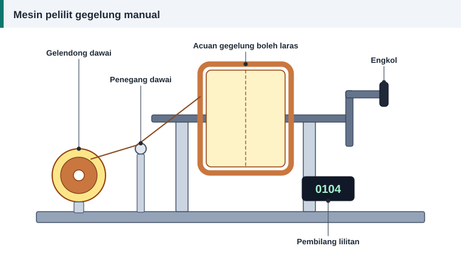

Panduan bengkel
Alat dan Bahan Bengkel Lilitan Semula Motor
Bengkel lilitan semula tidak memerlukan mesin yang mahal untuk bermula, tetapi beberapa alat tidak boleh ditinggalkan. Senarai ini disusun mengikut jenis kerja.


Alat ukur
| Alat | Kegunaan |
|---|---|
| Mikrometer | Mengukur diameter dawai dengan ketepatan 0.01 mm |
| Angkup vernier | Mengukur diameter dalam stator, panjang teras dan alur |
| Tolok dawai | Semakan pantas saiz dawai |
| Pembilang lilitan | Mengira lilitan semasa melilit gegelung |
| Penimbang | Menimbang kuprum lama dan baharu |
Alat melilit dan memasukkan
- Mesin pelilit dengan acuan boleh laras, sama ada manual atau bermotor.
- Pemegang gelendong dan penegang dawai.
- Bilah gentian atau buluh untuk menolak dawai ke dalam alur.
- Tukul getah atau kayu untuk membentuk hujung belitan.
- Gunting dan pisau untuk memotong kertas penebat.
- Alat pateri untuk sambungan.
Bahan habis pakai
- Dawai kuprum berenamel dalam beberapa saiz yang kerap digunakan.
- Kertas pelapik alur dan pemisah fasa mengikut kelas penebat.
- Baji, sarung penebat, tali pengikat dan pita.
- Varnis serta pencairnya.
- Pateri, wayar keluar bertebat dan cuping kabel.
Butiran bahan penebat ada dalam penebat alur, baji dan varnis.
Peralatan ujian
| Alat | Apa yang dikesan |
|---|---|
| Multimeter | Kesinambungan, voltan dan rintangan kasar |
| Meter ohm rendah | Keseimbangan rintangan fasa |
| Penguji penebatan | Kebocoran ke teras dan antara fasa |
| Meter pengapit | Arus setiap fasa semasa larian |
| Growler | Lilitan terpintas pada angker dan stator |
| Penguji pusuan | Litar pintas antara lilitan |
| Takometer | Laju aci |
Peralatan haba
Ketuhar pembakar bersuhu terkawal digunakan untuk melembutkan penebat belitan lama, dan ketuhar pengering untuk varnis. Kawalan suhu penting kerana teras yang terlalu panas kehilangan penebat di antara laminasinya.
Peralatan mekanikal
- Penarik galas dan pemanas galas.
- Penekan kecil.
- Set sepana, tukul dan penebuk pusat untuk menanda.
Peralatan keselamatan
- Cermin mata keselamatan, sarung tangan dan pelindung pernafasan.
- Pengudaraan yang baik dan alat pemadam api.
- Kunci dan tanda amaran untuk suis.
Bermula dengan bajet kecil
Untuk motor kecil dan kipas, peralatan berikut sudah memadai: mikrometer, mesin pelilit manual dengan pembilang, multimeter, penguji penebatan, alat pateri dan bahan penebat asas. Tambah peralatan lain apabila jenis kerja bertambah.
Rujukan dan bacaan lanjut
Artikel berkaitan
Langkah Demi Langkah Melilit Semula Motor Tiga Fasa
Daripada menanggalkan belitan lama hingga ujian akhir, ikuti sepuluh langkah melilit semula stator motor tiga fasa dengan kemas, selamat dan mengikut amalan baik bengkel.
Keselamatan Semasa Membaiki dan Menguji Motor Elektrik
Elektrik, bahagian berpusing, haba dan bahan kimia semuanya hadir di bengkel motor. Ikuti lima langkah pengasingan bekalan dan amalan selamat ini sebelum memulakan sebarang kerja.
Ujian Megger: Cara Mengukur Rintangan Penebatan Motor
Ujian rintangan penebatan mendedahkan belitan lembap, kotor atau rosak sebelum motor dihidupkan. Ikuti prosedur, voltan ujian dan nilai minimum yang disyorkan piawaian IEEE 43.